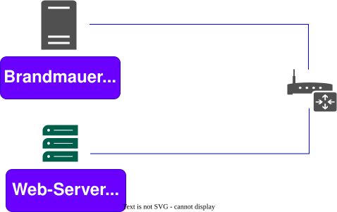

Process
all process ps -auxf
see all zombie process ps -aux | grep 'Z'
see systemd
ps -p 1
SIGKILL –9 SIGKILL –15
kill -9 PID
Symlink & Hardlink
Symlink example:
ln original_file symlink1
for Read: readlink symlink1
for search find . -type l
for see inode stat original_file
Hardlink example:
ln original_file hardlink1
see number of inode ‘stat original_file’
see how many hardlinks find . -inum 672135
inode - inode is a data structure that stores information about a file or directory in a file system.
Hardlink its like original file
Hardlink -> inode <- file <- Symlink
Password
etc/password and etc/shadow
change password
passwd username
Group
were can find group etc/groupand password of groups etc/gshadow
sudo groupadd devops
sudo usermod -a -G devops username
delete group delgroup
name
Add users
useradd username -b /home/username -c "Username Usernamov" -g usergroup -p password
new command
adduser username
change home directory to user:
sudo usermod -d /home/evil -m username
delete userdel username
find someting..
whereis passwd
`ls -la /usr/bin/passwd
SUID GSID Sticky
USER + S(pecial)
Commonly noted as SUID, the special permission for the user access level has a single function: A file with SUID always executes as the user who owns the file, regardless of the user passing the command. If the file owner doesn’t have execute permissions, then use an uppercase S here.
Now, to see this in a practical light, let’s look at the /usr/bin/passwd command. This command, by default, has the SUID permission set:
[tcarrigan@server ~]$ ls -l /usr/bin/passwd
-rwsr-xr-x. 1 root root 33544 Dec 13 2019 /usr/bin/passwd
Note: the s where x would usually indicate execute permissions for the user.\
command
chmod u+s file
Group + S(pecial)
Commonly noted as SGID, this special permission has a couple of functions:
-
If set on a file, it allows the file to be executed as the group that owns the file (similar to SUID)
-
If set on a directory, any files created in the directory will have their group ownership set to that of the directory owner
[tcarrigan@server article_submissions]$ ls -l
total 0
drwxrws---. 2 tcarrigan tcarrigan 69 Apr 7 11:31 my_articles
This permission set is noted by a lowercase s where the x would normally indicate execute privileges for the group. It is also especially useful for directories that are often used in collaborative efforts between members of a group. Any member of the group can access any new file. This applies to the execution of files, as well. SGID is very powerful when utilized properly.
As noted previously for SUID, if the owning group does not have execute permissions, then an uppercase S is used.
command: chmod g+s directory
Other + t (sticky) The last special permission has been dubbed the “sticky bit.” This permission does not affect individual files. However, at the directory level, it restricts file deletion. Only the owner (and root) of a file can remove the file within that directory. A common example of this is the /tmp directory:
[tcarrigan@server article_submissions]$ ls -ld /tmp/
drwxrwxrwt. 15 root root 4096 Sep 22 15:28 /tmp/
The permission set is noted by the lowercase t, where the x would normally indicate the execute privilege.
command ‘chmod +t directory’
Programs for working with packages
internal:
see all packages in system
dpkg -l
search packages in system
dpkg -s firefox-dbg
know what files
dpkg -s
what files belong to the package
dpkg -L openssh-client
for install dpkg -i program.deb for remove dpkg -r program.deb
search package
apt-cache search telegram
for search version of package
apt-cache policy openssh-client
and install version 1.8 apt-get install openssh-client=1.8
link from where download files
cat etc/sources.list
Systemd
where usr/lib/systemd/system
all units systemctl list-units for service systemctl list-units type=service
reload after change systemctl daemon-reload
for see logs systemctl -u unitname
Create unit in systemd
nano etc/systemd/system/apt.updater.service
[Unit]
Description=Example of Systemd Unit
[Service]
Type=oneshot
ExecStart=apt-get update
[Install]
WantedBy=multi.user.target
Create unit in systemd timer
nano etc/systemd/system/apt.updater.timer
[Unit]
Description=Runs apt-get update every hour
[Timer]
onUnitActiveSec=1h
Unit=apt-updater.service
[Install]
WantedBy=multi.user.target
Mount disk iso
sudo mkdir /media/ubuntu_iso
sudo mount /home/victor/Downloads/ubuntu-20.04.2-live-server.amd64.iso /media/ubuntu_iso/ -o loop
see mount disk df -h advanced mount | grep ubuntu_iso
dd
echo "123456" > file
dd if=file
img from disk
dd if=/dev/sda1 of=sda1.img bs=4096
- bs - block of file = 4096 kb
delete all files with zero 0000000000000
dd if=/dev/zero of=/dev/sdx bs=4096
Mount hardisk
see all partition fdisk -l
sudo fdisk /dev/sdb
-
m - see all command
-
g - create new GPT partition table
-
w - write
to create ext4
sudo mkfs.ext4 -F /dev/sdb1
mount manual but after restart will disappear
sudo mkdir /media/data/
sudo mount /dev/sdb1/ /media/data/
to auto mount after restart, to know UUID sudo blkid
sudo nana /etc/fstab/
.deb
see in deb package
ar t package.deb
- tar.xz - its zip arhive
see in archive files
ar p package.deb debian-binary
for see tar.zx files
ar p package.deb debian.tar.xz | tar -tv -J
unzip arhive
ar x package.deb
unzip archive tar.xz
tar xfv control.tar.xz
Create .deb
fist
sudo apt install dh-make devscripts
create need folder
mkdir mvdir-0.1
need in directory
cd mvdir
copy file mvdir.sh to folder mvdir-01
cp ../../mvdir.sh .
edit bashrc
nano /home/dan/.bashrc
add it and save
export CITY=Jerusalem
export DEBMAIL="dan@local"
export DEBFULLNAME="Dan"
run command source and for test echo $DEBMAIL
source /home/dan/.bashrc
for make sample deb need run in your folder mvdir-01
dh_make --indep --createorig
-
indep - its be run for all system linux where have bash
-
createorig - the file specified with
-fis copied in place. If no-fis supplied either but--createorigis, the current directory is created into a new archive
you can see new file in folder and remove all .ex files rm *.ex and rm README
now need create new file nano install and write:
mvdir.sh usr/bin/
- if we have many bash scripts use
*.sh usr/bin
for change file changelog use command dch
for build .deb
debuild -us -uc
-
-us- unsigned source it instructs no to sign the source files of the package with gpg key before create the package -
-uc- unsigned changes it instructs no to signchangelogfiles before creating the package
to install deb package to remove -r
sudo dpkg -i package.deb
Sign package deb
to create keys
gpg --gen-key
to change and update version of changelog file.(achtung! email and name must be the same gpg-keys)
dch -i
-i - increment update change version of changelog
see gpg keys
gpg --list-keys
now sign build package
debuild -b
to export gpg key
gpg --export -a "dan@local" > public.key
Monitoring and Proc
see version linux or uname -a uname take information from:
cat /proc/version
see cpu info
cat /proc/cpuinfo
see time online
cat /proc/uptime
see devices
cat /proc/devices
see what filesystems support
cat /proc/filesystems
see all mounts
cat /proc/mounts
see mem and swap ram
free -h
oom killer score s
cat /proc/13/oom_score_adj
iftop to see internet traffic
iftop
Ports
see if port 8080 open
netstat -lptun | grep 8080
Firewall
Iptables
see all rules :
sudo iptables -L
for all rules and numbers and tables
sudo iptables --line-numbers -L -v -n
see rules only input :
sudo iptables -L INPUT
all packet drop from 10.10.10.10
sudo iptables INPUT -s 10.10.10.10 -j DROP
all packet go to 10.10.10.10 drop
sudo iptables OUTPUT -s 10.10.10.10 -j DROP
all packege drop to 10.10.10.0/24
sudo iptables OUTPUT -s 10.10.10.0/24 -j DROP
all packet from 10.10.10.10 be drop to port 22
sudo iptables -A INPUT -p tcp --dport 22 -s 10.10.10.10 -j DROP
to accept all
sudo iptables -P INPUT ACCEPT
disable ICMP answer
sudo iptables -A INPUT -p icmp --icmp-type 8 -j DROP
for delete rules:
sudo iptables -D s 10.10.10.0 =j DROP
all clean rules:
iptables -F
Iptables persistent
we need iptables-persistent for be save after restart:
install
apt install iptables-persistent
run and save rules
sudo service netfilter-persistent save
to see changes netfilter file
cat /etc/iptables/rules.v4
to restore all rules in file
iptables-restore < /etc/iptables/rules.v4
sudo sh -c "iptables-restore < /etc/iptables/rules.v4"
NAT forward

to destination
iptables -t nat -A PREROUTING -p tcp -d 192.168.0.2 --dport 80 -j DNAT --to-destination 192.168.0.3:80
to source
iptables -t nat -A POSTROUTING -p tcp -d 192.168.0.3 --dport 80 -j SNAT --to-source 192.168.0.2:80
to source use masquerade
iptables -t nat -A POSTROUTING -p tcp -d 192.168.0.3 MASQUERADE
Simple Command
Delete
delete files and folder
rm -rf <folder>
Program Dependencies
ldd /usr/bin/bash
Tree
tree folder/
all tree process
sudo pstree
dmidecode is a tool for dumping a computer’s DMI (all hardware about machine)
dmidecode
System_Commands
List the file/folder in the current directory.
ls
List files/folders in a current directory in detailed format.
ls -larth
Shows detailed information about the file or directory.
stat <fileName/dirName>
View calendar.
cal
Shows the name of the system host.
hostname
Shows the host id of the system assigned by the OS.
hostid
Show the current data and time in UTC format
date
Shows the currently logged-in username of the terminal.
whoami
Shows the elapsed time duration since the machine logged in.
uptime
Unix name.
uname
Clears the screen.
clear
Lists all the commands executed until now.
history
Super User Do
sudo -i
Shows the exit status of the last executed command (0 — success, 1–255 — error/failure).
echo $?
Restart the machine immediately (-r restart).
shutdown -r now
Displays all the environment variables of the Linux system.
printenv
Shows previous logins in the Linux system.
Last
Directory Commands
Shows the present working directory (abbr. Print Working Directory).
pwd
Change directory.
cd
Changes to its parent directory (i.e.) one level up.
cd ..
Change to the directory mentioned.
cd <dirName>
Changes to the currently logged-in user’s home directory.
cd ~ or cd
Changes the directory two levels up.
cd ../..
Changes to the last working directory.
cd
Creates the directory.
mkdir <dirName>
Creates a directory with its parent directories if it does not exist (-p parent).
mkdir -p <pathOftheDir>
File Commands →
Creates an empty file or updates the timestamp of the existing file.
touch
Creates a single empty file.
touch <fileName>
Creates file1, file2 empty files.
touch <file1> <file2>
Concatenates and displays the contents of files.
cat
Displays the contents of the file.
cat <fileName>
Creates a new file, allows to input content interactively and redirects inputted content to the created file (> redirection operator).
cat > <fileName>
Displays first 10 lines of the file by default.
head <fileName>
Displays first 5 lines of the file (-n number)
head -n 5 <fileName>
Displays the last 10 lines of the file by default.
tail <fileName>
Displays last 5 lines of the file (-n number).
tail -n 5 <fileName>
Displays contents of the file in real-time even when the file is rotated or replaced (used for log file monitoring).
tail -F <fileName>
Used to view large files (log files) in a paginated manner.
less <fileName>
rm — remove commands
Removes the file.
rm <fileName>
Removes files & folders of directory recursively (-r recursive).
rm -r <dirName>
Force remove the files & folders of directory recursively (-f force).
rm -rf <dirName>
cp — copy commands
Copy the files and folders from source to destination.
cp <source> <destination>
Copy dir1 directory to dir2 directory recursively (-r recursive).
cp -r <dir1> <dir2>
Move or rename commands
mv
mv <fileName> <newFileName> — renames the file to a new name.
Moves the file to new path.
mv <oldFilePath> <newFilePath>
File Permission Commands
Changes mode/permissions of the file.
chmod <octalNumber> <fileName>
Changes mode/permissions of the directory recursively.
chmod <octalNumber> -R <dirName>
Changes the user ownership of a file.
chown <newUser> <fileName>
Changes the user & group ownerships of a file.
chown <newUser>:<newGroup> <fileName>
Updates the group name for file/directory.
chgrp <groupName> <fileName/dirName>
Shows the file/directory access control list.
getfacl <fileName/dirName>
Modifies the current acl of the file/directory.
setfacl -m u:<userName>:rwx <fileName/dirName>
Removes the acl permissions for the file/directory.
setfacl -x u:<userName>: <fileName/dirName>
Modifies the group acls for the file/directory.
setfacl -m g:<groupName>:rwx <fileName/dirName>
Removes the group acl permissions for the file/directory.
setfacl -x g:<groupName>: <fileName/dirName>
File Permission Octal Numbers read (r) — 4, write (w)- 2, execute (x) — 1 => chmod 777 < file /folder_name >
User Management Commands →
Creates a user account.
useradd
Creates user account without home & mail spool directories.
useradd <userName>
Creates user account with home & mail spool directories.
useradd -m <userName>
Creates a password for the user and stores it in /etc/shadow file.
passwd <userName>
User delete.
userdel
Deletes the user from the system.
userdel <userName>
Deletes the user from the system along with home and mail spool directories (-r remove).
userdel -r <userName>
Stores information about user accounts.
/etc/passwd
Displays the complete list of users on that machine.
cat /etc/passwd
Stores the password for users in an encrypted format.
/etc/shadow
Displays the complete list of user passwords on that machine.
cat /etc/shadow
Substitute user.
su
Switches to the user mentioned.
su <userName>
To log out from that user.
exit
Modify user.
usermod
Adds the user to another group (-aG append the user to the group without removing from other groups).
usermod -aG <groupName> <userName>
Change shell.
chsh
Changes the shell to bash for the user.
chsh -s /bin/bash <user>
Changes the shell to sh for the user.
chsh -s /bin/sh <user>
Group Management Commands →
Creates the group.
groupadd <groupName>
Delete the group.
groupdel <groupName>
Stores the information of the groups.
/etc/group
Displays the complete list of groups on that machine.
cat /etc/group
Creates a password for the group.
gpasswd <groupName>
Adds the user to the group.
gpasswd -a <userName> <groupName>
Removes the user from the group.
gpasswd -d <userName> <groupName>
Adds multiple users to the group and removes the existing ones of the group.
gpasswd -M <userName1>,<userName2>,<userName3> <groupName>
Searching Commands →
Used to search for files/directories based on names.
locate
Updates the database so the results are up-to-date.
sudo updatedb
Locates the file/directory and displays the path.
locate <fileName/dirName>
GREP Command s— Global Regular Expression Print →
Used to find text patterns within files.
grep <textToSearch> <fileName>
Used to find text patterns within the file ignoring the case (-i ignore case).
grep -i <textToSearch> <fileName>
Used to find non matching lines of text patterns (-v invert-match).
grep -v <textToSearch> <fileName>
Used to display the matching string file names.
grep -l <textToSearch> <fileNames>
Find Commands →
Finds the mentioned file if available in the current directory (.(period) represents current directory).
find. -name <fileName>
Finds the mentioned file in the directory.
find <dirName> -name <fileName>
Finds the files in the directory having 754 permission.
find <dirName> -perm 754
Hardware Commands →
Shows systems memory information ( -h human-readable format).
free -h
Shows the disk space usage of mounted file systems.
df -h
Disk usage.
du
Displays disk usage information (-h human-readable format).
du -h
Displays the total size of the directory instead of individual files in human-readable format (-s summarize).
du -sh
Displays the total size of the file/directory.
du -sh <fileName/dirName>
Network Commands →
Tests the reachability & responsiveness of the remote host.
ping <hostName>
Shows DNS information of the domain.
dig <domainName>
Used to retrieve/download files from the internet.
wget <url>
Used to retrieve/download files from the internet.
curl <url>
Display available network interfaces.
ifconfig
Display and manipulate network interface info.
ip addr
Shows the public IP address of the machine.
curl ifconfig.me
Shows all TCP open ports (-a all, t-tcp, n-active, p protocol).
netstat -antp
Traces the route using packets from source to destination host.
traceroute <url>
Process Info Commands →
ps — process status.
Shows the currently running process.
ps
Shows the process of the username
ps -u <userName>
Shows all the processes of the system.
ps -ef
Shows the real-time, dynamic view of the running processes of a system.
top
Gracefully terminates the process pid.
kill <pid>
Shows process ID of processes based on name/other criteria.
pgrep <processName>
Background, sends the process to the background & continues execution without interruption.
bg
foreground, brings the process to the foreground and makes it an active process.
fg
No hangup, runs command/script in the background even after the terminal is closed or the user logs out.
# nohup
Archiving File Commands →
Tape archive.
tar
Creates the tar file with the fileName for the directory mentioned (-c create, -v verbose, -f output file name).
tar -cvf <fileName> <directory>
tar -xvf <sourceTarFileName> -C <destinationDir>
Package Manager — LINUX DISTROS
-
apt — Package Manager for Debian-based Linux distributions Eg: Ubuntu.
-
yum — Package Manager for Redhat-based Linux distributions Eg: Amazon_Linux.
Repository
Disable
sudo apt-get update --allow-unauthenticated
sudo apt-get update --allow-insecure-repositories
Crontab
0 12 1 * * /opt/wordpress/tls_renew.sh >> /var/log/cron.log 2>&1
# * * * * *
# | | | | |
# | | | | |
# | | | | +-------------------- day of week [0 - 6] [Sunday=0]
# | | | +-------------------- month [1-12]
# | | +--------------------- day of month [1-31]
# | +---------------------- hour [0-23]
# +----------------------- min [0-59]
edit
crontab -e
list
crontab -l
edit other user root
crontab -eu root
Systemd Timer
Option
OnActiveSec= Defines a timer relative to the moment the timer unit itself is activated.
OnBootSec= Defines a timer relative to when the machine was booted up. In containers, for the system manager instance, this is mapped to OnStartupSec=, making both equivalent.
OnStartupSec= Defines a timer relative to when the service manager was first started. For system timer units this is very similar to OnBootSec= as the system service manager is generally started very early at boot. It’s primarily useful when configured in units running in the per-user service manager, as the user service manager is generally started on first login only, not already during boot.
OnUnitActiveSec= Defines a timer relative to when the unit the timer unit is activating was last activated.
OnUnitInactiveSec= Defines a timer relative to when the unit the timer unit is activating was last deactivated.
1.Create the file /etc/systemd/system/helloworld.service with the following content:
[Unit]
Description="Hello World script"
[Service]
ExecStart=/usr/local/bin/helloworld.sh
[Install]
WantedBy=multi-user.target
2.Create the file /etc/systemd/system/helloworld.timer with the following content:
[Unit]
Description="Run helloworld.service 5min after boot and every 24 hours relative to activation time"
[Timer]
OnBootSec=5min
OnUnitActiveSec=24h
OnCalendar=Mon..Fri *-*-* 10:00:*
Unit=helloworld.service
[Install]
WantedBy=multi-user.target
This is the timer file that controls the activation of the respective service file.
3.Verify that the files you created above contain no errors:
systemd-analyze verify /etc/systemd/system/helloworld.*
4.Start the timer:
sudo systemctl start helloworld.timer
5.Enable the timer to make sure that it is activated on boot
sudo systemctl start helloworld.timer
from cron to systemd
Cron : systemd timer
-------- : ----------------------------
@reboot : OnBootSec=1s
@yearly : OnCalendar=*-01-01 00:00:00
@annually: OnCalendar=*-01-01 00:00:00
@monthly : OnCalendar=*-*-01 00:00:00
@weekly : OnCalendar=Sun *-*-* 00:00:00
@daily : OnCalendar=*-*-* 00:00:00
@hourly : OnCalendar=*-*-* *:00:00
Getting e-mail notifications when a timer fails
In the following example, we are using the mailx command from package mailx. It requires the Postfix e-mail server to be installed and correctly configured.
Create the script /usr/local/bin/send_systemd_email.
The script requires two parameters: $1, the e-mail address, and $2, the name of the service file for which the failure notification is received. Both parameters are supplied by the unit file running the mail script.
#!/bin/sh
systemctl status --full "$2" | mailx -S sendwait\
-s "Service failure for $2" -r root@$HOSTNAME $1
Make sure the script is executable:
sudo chmod 755 /usr/local/bin/send_systemd_email
Create the file /etc/systemd/system/send_email_to_USER@.service.
[Unit]
Description=Send systemd status information by email for %i to USER
[Service]
Type=oneshot
ExecStart=/usr/local/bin/send_systemd_email EMAIL_ADDRESS %i
User=root
Group=systemd-journal
Replace USER and EMAIL_ADDRESS in the file with the login and e-mail address of the user that should receive the e-mail. %i is the name of the service that has failed (it is passed on to the e-mail service by the %n parameter).
Verify the service file and fix the reported issues:
systemd-analyze verify /etc/systemd/system/send_email_to_USER@.service
Verify the service file and fix the reported issues:
```bash
sudo systemctl start send_email_to_USER@dbus.service
If the command returns no output, the file has passed the verification successfully.
To verify the complete procedure, start the service using the dbus instance for testing. (You can use any other service that is currently running. dbus is used in this example because the service is guaranteed to run on any installation.)
sudo systemctl start send_email_to_USER@dbus.service
If successful, EMAIL_ADDRESS receives an e-mail with the subject Service failure for dbus containing dbus status messages in the body. (This is just a test, there is no problem with the dbus service. You can safely delete the e-mail, no action is required).
If the test e-mail has been successfully sent, proceed by integrating it into your service file.
To add an e-mail notification to the service, add an OnFailure option to the Unit section of the service file for which you would like to get notified in the event of failure:
[Unit]
Description="Hello World script"
OnFailure=send_email_to_USER@%n.service
[Service]
ExecStart=/usr/local/bin/helloworld.sh
The e-mail service file has the recipient’s e-mail address hard-coded. To send notification e-mails to a different user, copy the e-mail service file, and replace the user login in the file name and the e-mail address within the copy.
To send a failure notification to several recipients simultaneously, add the respective service files to the service file (use spaces as a separator):
OnFailure=send_email_to_tux@%n.service send_email_to_wilber@%n.service